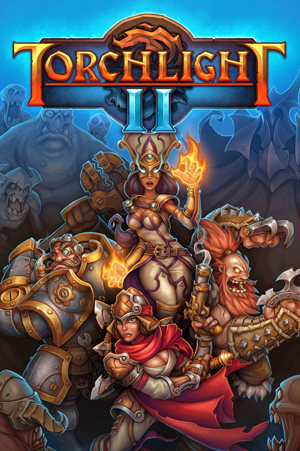

Torchlight II
Torchlight II
Detalhes
|  | |
| Tempo de jogo | Não Jogado |
| Última Atividade | Nunca |
| Adicionado | 18/04/2024 21:08:50 |
| Modificado | 10/03/2025 1:20:43 |
| Status de Conclusão | Not Played |
| Biblioteca | Epic |
| Fonte | Epic |
| Plataforma | PC (Windows) |
| Data de Lançamento | 20/09/2012 |
| Pontuação da Comunidade | 78 |
| Avaliação da crítica | 82 |
| Pontuação do Usuário | |
| Gênero | Action RPG |
| Desenvolvedor | Panic Button Runic Games |
| Editor | Perfect World Entertainment Runic Games |
| Funções | Online |
| Links | PCGamingWiki Official site GOG Database HowLongToBeat IGDB SteamDB StrategyWiki MobyGames Wikipedia WSGF |
| Tag | [EMT] Video Micro missing |
Descrição
Runic Games' sequel in the award-winning action-RPG franchise features additional character classes, quests, monsters, and dungeons not found in the original game. Torchlight II also now includes cooperative play through a free, peer-to-peer matchmaking service. Play with your friends, and use the free peer-to-peer matchmaking service to meet new players of a similar level and interest. Together players will discover expansive randomized outdoor areas and deep ominous caverns; random instanced and persistent dungeons, a huge variety of all new monsters and villains, endless variations of loot to find, and quests to complete. Players journey through the perilous Overworld, enjoying all new weather features, time of day events, and a rich and cunning story to drive gameplay.